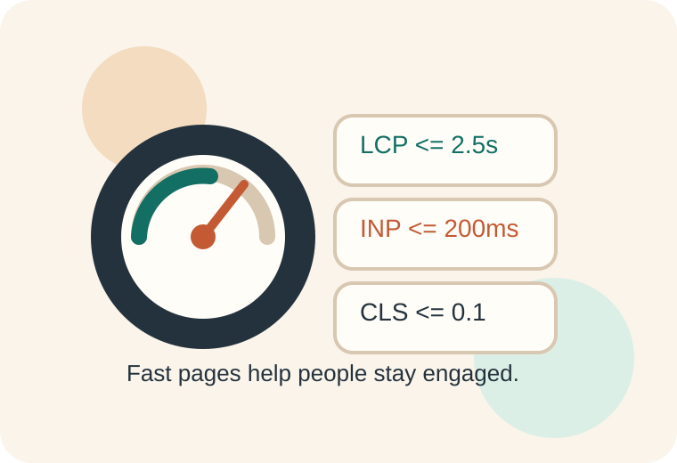

Performance shapes how trustworthy a website feels.
Users notice performance through speed, responsiveness, and visual stability. A page that loads quickly,
responds on time, and avoids weird layout shifts feels more reliable and easier to use.
Main point: performance is not just a technical benchmark. It affects whether people stay,
finish what they came to do, and trust the site.

Core Web Vitals summarize three user-centered metrics: loading, interactivity, and visual stability.
Loading
Users want to see useful content quickly. Performance work often begins by reducing heavy images,
unnecessary scripts, and render-blocking resources.
Interactivity
Pages should respond to clicks, taps, and typing without visible lag. Too much JavaScript can delay
how quickly the browser can react.
Visual stability
Layout shifts can make users lose their place. Reserving space for images and embedded content helps the
interface stay stable while assets load.
Core Web Vitals Snapshot
Metric
What it Measures
Good Threshold
LCP
How quickly the main visible content finishes loading.
2.5 seconds or less
INP
How responsive the page feels after the user interacts.
200 milliseconds or less
CLS
How much the layout shifts unexpectedly while loading.
0.1 or less
Common Performance Wins
Compress and properly size images before publishing them.
Use semantic HTML and lean CSS before reaching for large script-heavy solutions.
Load only the fonts, scripts, and third-party widgets a page actually needs.
Set width and height on images so the browser can reserve space in advance.
Test real pages with Lighthouse or other performance tools before deployment.
Research-Based Summary
web.dev describes Core Web Vitals as user-centered metrics that apply to all web pages. The same source
also points out that speed matters because delays hurt retention and conversions, while faster sites improve
the overall experience. So performance work helps both usability and the success of the project.
Source focus: web.dev articles on Core Web Vitals and why website speed matters.
Performance in This Site
This project keeps the frontend lightweight by using one stylesheet, optimized SVG illustrations,
and a small JavaScript file only for the quiz page. That keeps the site lighter while still
making it more interactive while the responsive CSS keeps it usable for milestone 3.
Performance Checklist
Give images explicit dimensions so the browser can reserve space early.
Keep scripts focused on features that add real value to the page.
Prefer clean HTML and CSS before adding complex libraries.
Measure page performance again after every new feature is added.